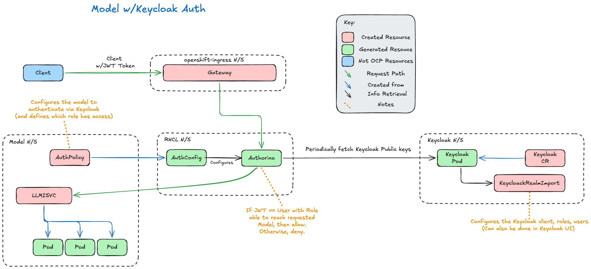
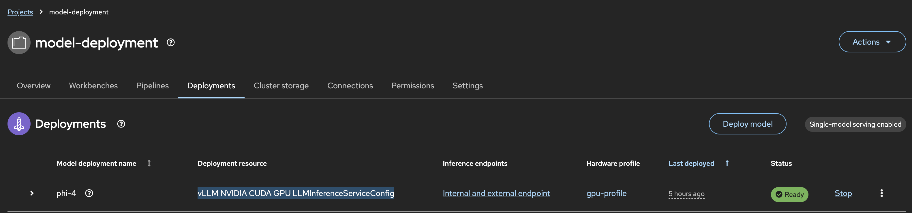

LLM Auth With Keycloak
Scope
This demo is specifically for models deployed with Red Hat OpenShift AI, and an LLMInferenceService object. Models served with InferenceService and ServingRuntime objects will not use Red Hat Connectivity Link (RHCL), and therefore can't use the mechanisms described.
Why?
When you're running your authenticated model on your OpenShift cluster, it's not always desirable for every user who uses the model, to also have credentials to the cluster itself. That's where having some form of Identity and Access Management (IAM) solution, such as Keycloak, can help.
Keycloak allows a user to login to Keycloak, generate a JSON Web Token (JWT) and authenticate to the model with that. That way, no OpenShift user or service account tokens have to be generated and used, the user is effectively unknown to OpenShift.
What?
The main component that goes into this is Authorino, installed by Red Hat Connectivity Link (RHCL). When you deploy a model onto OpenShift using the LLMInferenceService method, requests flow through the Gateway API.
The Gateway API has it's own Authorino AuthPolicy in the openshift-ingress namespace, that assumes all requests must be authenticated with an OpenShift token. However, if you create a new AuthPolicy in your deployed model's namespace that configures Keycloak authentication, this takes precedence.
A simplified request flow and arch diagram is shown below.

How?
Deployment Steps
-
Deploy a model via the RHOAI UI as per usual. Ensure that is uses
llmInferenceServiceobjects, and not theLegacy Deploymentmethod. Also ensure you enable authentication.
-
Install and deploy Keycloak. A helper repo is provided. This will install and configure Red Hat's Build of Keycloak (RHBK), into the
keycloaknamespace, using Kustomize. Just make sure you change the Keycloak Hostname in the CR.$ tail -n 6 keycloak.yaml hostname: hostname: keycloak.apps.<CLUSTER_DOMAIN> ### CHANGE_ME strict: false strictBackchannel: false proxy: headers: xforwarded $ oc apply -k keycloak/ -
Next, we need to create the Keycloak Realm. This can be done either via the UI, or declaratively, such as below. This YAML is also provided.
1) Think of Realms are separate environments (i.e. Dev, Prod, etc.) In this instance we haveapiVersion: k8s.keycloak.org/v2alpha1 kind: KeycloakRealmImport metadata: name: llm-auth-realm namespace: keycloak spec: keycloakCRName: keycloak realm: realm: llm-auth #1 enabled: true clients: - clientId: llm-client #2 enabled: true publicClient: true directAccessGrantsEnabled: true standardFlowEnabled: false roles: - name: auth-to-model #3 users: - username: alice #4 firstName: Alice lastName: Test email: alice@test.com enabled: true requiredActions: [] credentials: - type: password value: password temporary: false clientRoles: llm-client: - auth-to-model - username: bob #4 firstName: Bob lastName: Test email: bob@test.com enabled: true requiredActions: [] credentials: - type: password value: password temporary: falsellm-auth.2) Clients would then represent individual applications within that environment - ours is
llm-client.3) Roles define what a user can do within a Realm (Realm Role) or in a Client (Client Roles). We have a role called
auth-to-model.4) Users are scoped to the Realm, and will be assigned Client Roles or Realm Roles, to define their access. In this example, we have Alice and Bob - however only Alice has the
auth-to-modelrole. -
Finally, add in the
AuthPolicyin the deployed model's namespace. You'll need to substitute in your${MODEL_NAMESPACE},${MODEL_NAME}and${KEYCLOAK_URL}.1) This is Common Expression Language (CEL), that states the decoded JWT needs to have the "llm-client" dictionary, and in that, there needs to be a role called "auth-to-model". For context, here's that excerpt in Alice's JWT:apiVersion: kuadrant.io/v1 kind: AuthPolicy metadata: name: keycloak-authn namespace: ${MODEL_NAMESPACE} spec: targetRef: group: gateway.networking.k8s.io kind: HTTPRoute name: ${MODEL_NAME}-kserve-route rules: authentication: keycloak-jwt: jwt: issuerUrl: ${KEYCLOAK_URL}/realms/llm-auth authorization: model-access: patternMatching: patterns: - predicate: "'llm-client' in auth.identity.resource_access && 'auth-to-model' in auth.identity.resource_access['llm-client'].roles" #1 response: success: filters: identity: plain: expression: auth.identity"resource_access": { "llm-client": { "roles": ["auth-to-role"] } } -
Last thing to do is try it! A script has been provided in the helper repo. Be sure to change the variables at the top!
$ head -n5 test-model.sh # ---- Configuration ---- KEYCLOAK_URL="https://keycloak.apps.<CLUSTER_DOMAIN>" MODEL_NAMESPACE="model-deployment" MODEL_NAME="<MODEL_NAME>" # ----------------------- $ ./test-model.sh --- Alice --- HTTP 200 --- Bob --- HTTP 403
From the User's Perspective
Unfortunately, Keycloak doesn't provide a UI for users, like Bob and Alice, to retrieve their JWT.
For them to authenticate with the user, they have to retrieve their token via curl. Below is the example for Alice.
TOKEN=$(curl -s -X POST \
https://${KEYCLOAK_URL}/realms/llm-auth/protocol/openid-connect/token \
-H "Content-Type: application/x-www-form-urlencoded" \
-d "client_id=llm-client" \
-d "username=alice" \
-d "password=password" \
-d "grant_type=password" | jq -r '.access_token')
The token is then used to authenticate with the model, rather than using an OpenShift Token. i.e.
curl -s -X POST https://${MODEL_URL}/v1/chat/completions \
-H "Authorization: Bearer ${TOKEN}" \
-H "Content-Type: application/json" \
-d '{
"model": "${MODEL_NAME}",
"messages": [{"role": "user", "content": "Hello!"}]
}'
To provide a more user-friendly experience, a front-end application that handles logging in and the token on behalf of the user, can be used in between. This would be specific to the use-case of the model, for instance, a chatbot UI.